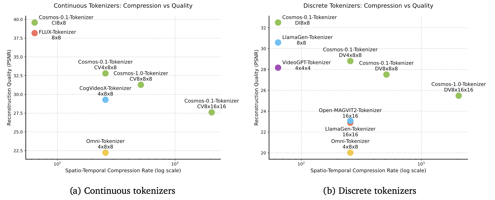

Tokenização | Tokenization
Summary of chapter 4 in Cosmos paper
Overview
Tokenizers are fundamental building blocks of modern large-scale models. They transform raw data into more efficient representations by learning a bottle-necked latent space discovered in an unsupervised manner. Specifically, visual tokenizers map raw and redundant visual data into compact semantic tokens, making them crucial for handling high-dimensional visual data.
The image bellow illustrates the tokenization training pipeline, where the goal is to train the encoder and decoder so that the bottleneck token representation maximally preserves visual information in the input.

In the pipeline, an input video is encoded into tokens, which are usually much more compact than the input video. The decoder then reconstructs the input video from the tokens. Tokenizer training is about learning the encoder and decoder to maximally preserve the visual information in the tokens.
Tokenizers come in two types: continuous and discrete. Continuous tokenizers encode visual data into continuous latent embeddings, as in latent diffusion models like Stable Diffusion or VideoLDM. These embeddings are suitable for models that generate data by sampling from continuous distributions. Discrete tokenizers encode visual data into discrete latent codes, mapping them into quantized indices, as seen in autoregressive transformers such as VideoPoet. This discrete representation is necessary for models such as GPT that are trained with the cross-entropy loss.
The success of tokenizers largely relies on their ability to deliver high compression rates without compromising their subsequent visual reconstruction quality. On one hand, high compression reduces storage and computational demands. On the other hand, excessive compression can lead to the loss of essential visual details. This trade-off presents a significant challenge in tokenizer design.
The following image illustrates the two types of tokens:
TODO aqui

The following table illustrates different visual Tokenizers and their capabilities:

The Cosmos Tokenizer uses a lightweight and computationally efficient architecture with a temporally causal mechanism. Specifically, it employs causal temporal convolution layers and causal temporal attention layers to preserve the natural temporal order of video frames.
The tokenizers are trained directly on high-resolution images and long-duration videos without limiting the categories or aspect ratios. The Cosmos Tokenizer operates across various aspect ratios. They are temporally length-agnostic during inference, capable of tokenizing beyond the temporal length on which it was trained.
The plots bellow show the comparison in performance between the Cosmos Tokenizer and other ones, and denotes the superior quality even at higher compression rates:
